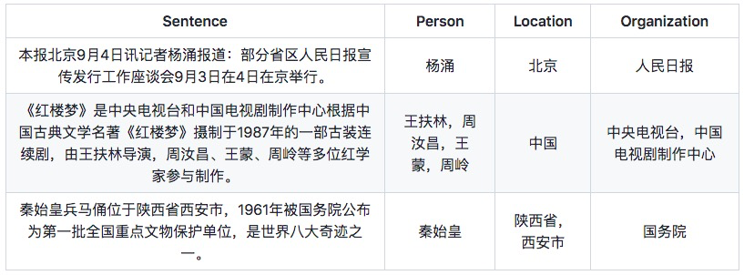
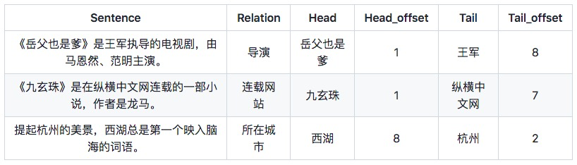
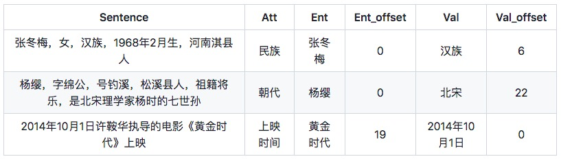

1.DeepKE介绍
DeepKE 是一个支持低资源、长篇章的知识抽取工具，可以基于pytorch实现命名实体识别、关系抽取和属性抽取功能。
2.DeepKE模型架构
Deepke的架构图如下所示

DeepKE包括了三个模块，可以进行关系抽取、实体命名识别以及属性抽取的任务，在各个模块下包括各自的子模块。其中关系抽取模块就有常规模块、文档级抽取模块以及低资源少样本模块。在每一个子模块中，分为分词、预处理等的一个工具集合，以及编码和训练预测部分。
3.DeepKE快速上手
(1)命名实体识别NER
数据为txt文件，样式范例为：
具体流程请进入详细的README中：
STANDARD ： 常规模块为预训练模型，可进入其目录，修改数据集以及conf文件夹下的目录，python run.py即可训练，python predict.py即可预测。
FEW-SHOT ： 少样本模块使用了LightNER模型，可进入其目录，模型加载和保存位置以及配置可以在shell脚本中修改python run.py训练conll2003,python run.py +train=few_shot直接进行few-shot训练,若要加载模型，修改few_shot.yaml中的load_path,python predict.py即可预测。
(2)关系抽取RE
关系抽取是从非结构化的文本中抽取出实体之间的关系，以下为几个样式范例，数据为csv文件：
具体流程请进入详细的README中，RE包括了以下三个子功能:
STANDARD ： 常规模块为常用的深度学习模型，有CNN、RNN、Capsule、GCN、Transforemer以及预训练模型，可进入其目录，修改数据集以及conf文件夹下的目录，python run.py即可训练，python predict.py即可预测。
FEW-SHOT : 进入其目录，修改数据集以及conf文件夹下的目录，python run.py即可训练，如需从上次训练的模型开始训练：设置.yaml中的train_from_saved_model为上次保存模型的路径，每次训练的日志保存路径默认保存在根目录，可以通过.yaml中的log_dir来配置python predict.py即可预测。
DOCUMENT : train_distant.json由于文件太大，请自行从Google Drive上下载到data/目录下.进入其目录，修改数据集以及conf文件夹下的目录，python run.py即可训练，如需从上次训练的模型开始训练：设置.yaml中的train_from_saved_model为上次保存模型的路径，每次训练的日志保存路径默认保存在根目录，可以通过.yaml中的log_dir来配置python predict.py即可预测。
(3)属性抽取AE
数据为csv文件，样式范例为：
具体流程请进入详细的README中:
STANDARD ： 常规模块为常用的深度学习模型，有CNN、RNN、Capsule、GCN、Transforemer以及预训练模型，可进入其目录，修改数据集以及conf文件夹下的目录，python run.py即可训练，python predict.py即可预测。
4.DeepKE开发团队
DeepKE由浙江大学知识图谱团队协作完成，主要贡献者包括：张宁豫、陶联宽、余海洋、陈想、田玺、李磊、黎洲波、徐欣、邓淑敏、谢辛、郑国轴、陈华钧等。